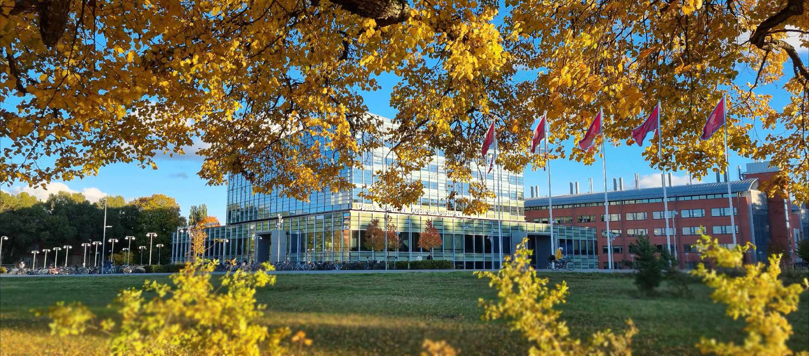
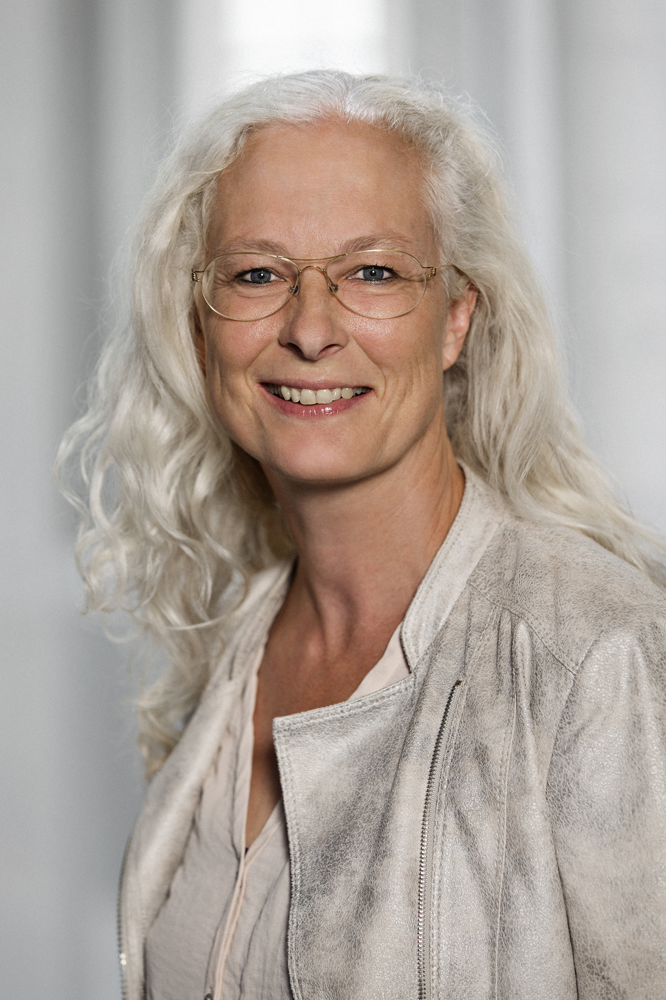
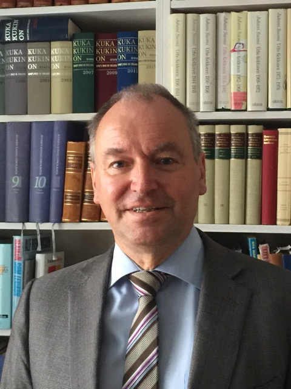
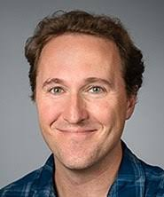
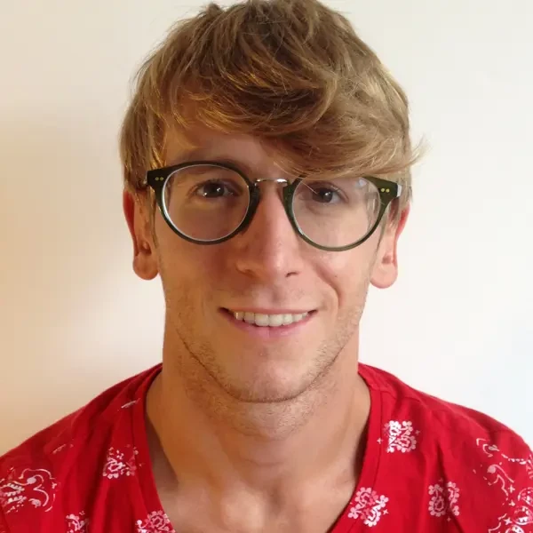
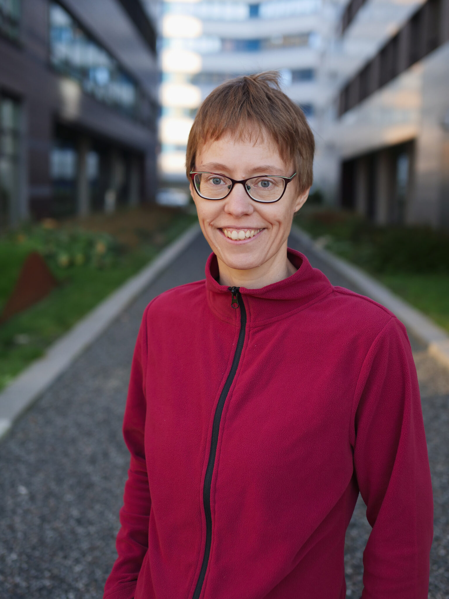

3–4 December 2026
Ångströmlaboratoriet, Uppsala University, Uppsala, Sweden
| Home | Programme | Speakers | Abstracts | Registration | Venue | Organisers |
The meeting will bring together researchers across the Nordic countries and is open to researchers at all career stages working in biomathematics and related areas of applied mathematics, statistics, and theoretical biology. It aims to foster scientific exchange and collaboration across institutions and research areas.
| Dates | 3–4 December 2026 |
| Location | Ångströmlaboratoriet, Uppsala University, Uppsala, Sweden |
| Organisers | Sara Hamis and Linnéa Gyllingberg |
| Registration | Open — deadline Monday, 31 August 2026. Register here. |
| Abstracts | Open — deadline Monday, 31 August 2026. Submit here. |
| Fee | The meeting is free of charge. |
| Funding | Supported by the Wenner-Gren Foundations |
The meeting will begin at 09:00 on Thursday 3 December 2026 and end at 15:00 on Friday 4 December 2026.
The programme will include:
A detailed timetable will be published closer to the meeting.

Susanne Ditlevsen, University of Copenhagen, Denmark
Susanne Ditlevsen is a Professor of Statistics at the University of Copenhagen and President of the Royal Danish Academy of Sciences and Letters. Her research focuses on stochastic processes, nonlinear dynamics, and statistical modelling, with applications in neuroscience, ecology, physiology, and climate science, among other fields.

Mats Gyllenberg, Finnish Society of Sciences and Letters and University of Helsinki, Finland
Mats Gyllenberg is a Professor Emeritus at the University of Helsinki and Permanent Secretary of the Finnish Society of Sciences and Letters. His research centres on dynamical systems and mathematical biology, particularly structured population models, ecology, evolution, and adaptive dynamics.

Eric Libby, Umeå University, Sweden
Eric Libby is an Associate Professor at Umeå University and a member of the interdisciplinary research environment IceLab. His research uses mathematical modelling to study the origins of multicellularity, microbial cooperation, life cycles, and new levels of biological organisation.

Stefano Sarao Mannelli, Chalmers University of Technology and University of Gothenburg, Sweden
Stefano Sarao Mannelli is an Assistant Professor in Data Science and AI at Chalmers University of Technology and the University of Gothenburg. His research combines machine learning, statistical physics, and cognitive science to study learning, generalisation, optimisation, and adaptation in machines and animals.

Susanna Röblitz, University of Bergen, Norway
Susanna Röblitz is a Professor at the University of Bergen and a group leader at the Computational Biology Unit. Her research focuses on the modelling, analysis, and simulation of dynamical systems in the life sciences, particularly in systems biology and pharmacology.
Abstract submission is now open. The deadline is Monday, 31 August 2026.
Abstracts for contributed talks and posters can be submitted via the registration and abstract submission form. Submitting the form does not guarantee registration.
Decisions on contributed talks and posters will be communicated during the second half of September 2026.
Registration is now open. The deadline is Monday, 31 August 2026. The meeting is free of charge.
Please register using the registration and abstract submission form. Submitting the form does not guarantee registration.
Space is limited. In the case of excess applications, applications from Nordic institutions will be prioritized to strengthen connections within the Nordic biomathematics community, though all applications will be reviewed and considered.
Confirmation of registration will be sent in early September 2026. Decisions on contributed talks and posters will be communicated during the second half of September 2026.
The meeting will be held at Ångströmlaboratoriet, Uppsala University, Uppsala, Sweden.
Uppsala is easily reached from Stockholm Arlanda Airport by train or by bus (approximately 20 or 40 minutes) and from Stockholm Central Station by train (approximately 40 minutes). Further travel information will be added here.
Suggestions for nearby hotels in Uppsala will be added to this page closer to the meeting. Uppsala city centre has a range of hotels at various price ranges, most within easy reach of the venue.
The 3rd Nordic Biomathematics Meeting is supported by the Wenner-Gren Foundations.